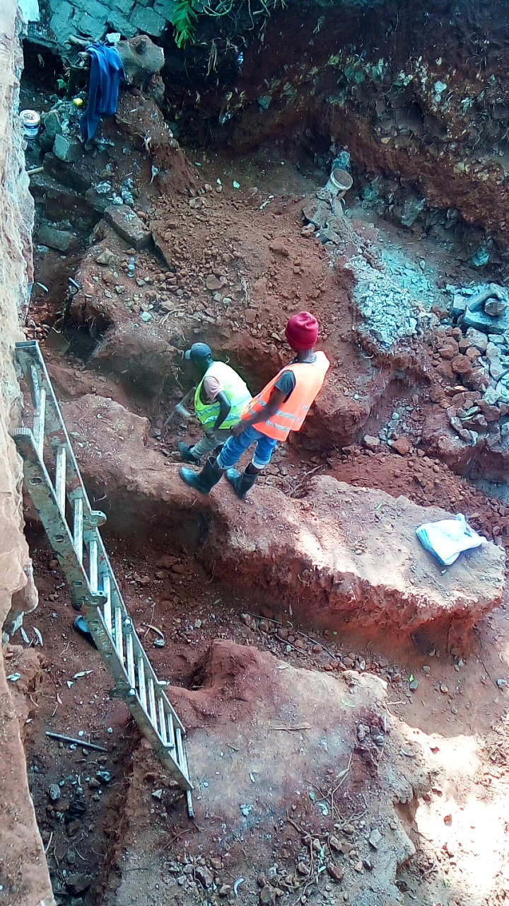
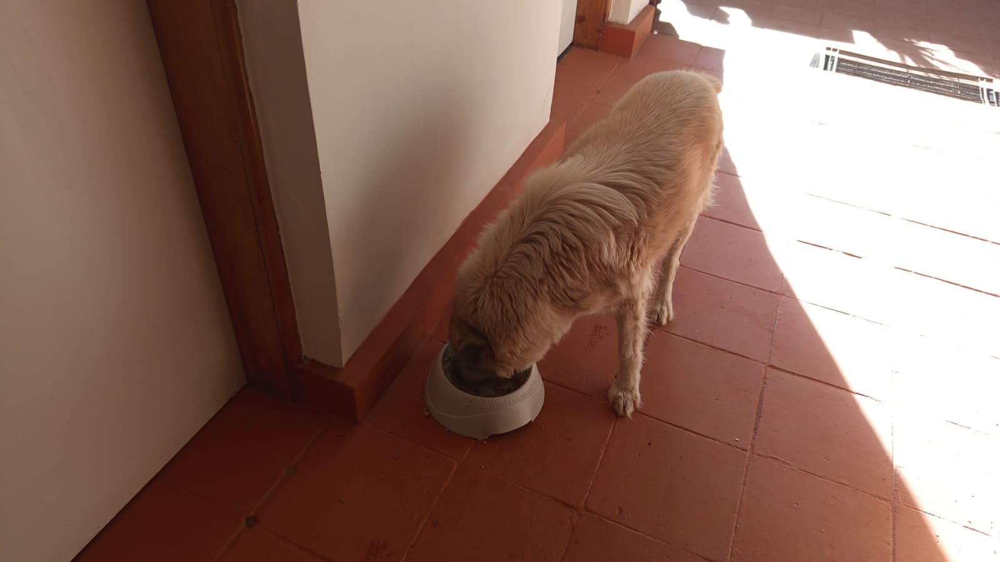

Mucheru World of Golf
Field operations at Mucheru World of Golf on Thursday, 24th September 2026 combined heavy machinery earthmoving, course feature shaping, extensive perimeter landscaping, and foundation rock placement:
- Teebox Reshaping (Tees 1, 2 & 3): The Backhoe Loader completely reshaped the playing platforms of Teebox 1, Teebox 2, and Teebox 3, cutting and grading their elevated launch surfaces to design levels aligned with their fairway corridors.
- Green 4 Surrounds Ground Leveling: High soil mounds around Green 4 were cut and leveled down to ground level using the Backhoe Loader front bucket, establishing clean slope transitions.
- Green 1 Riversand Application: Clean riversand was hauled and applied halfway across the green foundation bed over the compacted volcanic pumice sub-base, preparing the surface for final leveling.
- Green 7 Hardcore Infill & Breaking: Hardcore stones were loaded onto the farm tractor trailer using the Backhoe Loader and a manual crew, hauled and dumped into the Green 7 sub-base. The crew actively placed and fractured the hardcore rocks to build the foundation bed, with placement ongoing.
- Green 10 Soil Stockpile Reshaping: The large dumped soil hill near Green 10 was cut into and reshaped using the Backhoe Loader, spreading excess fill and re-contouring the approach area.
- Boundary Hedge Seedling Planting: The women crew planted and watered hedge seedlings from the boundary corner near the tarmac road, past Green 5, all the way to Teebox 15. The farm tractor was used to transport and distribute seedlings along the perimeter trench.
- Palm Tree Filling, Retouching & Ring Irrigation: The farm tractor hauled and dumped red soil all along the palm tree corridor from the main gate to the last planted palm at Green 6 to fill planting basins. The women crew retouched planted palms to ensure proper depth, and all palms were watered using the ring irrigation system.
- Golf Gate B Road Leveling & Fence Repair: Murram soil was loaded, hauled, dumped on the road outside Golf Gate B, and leveled smooth with the Backhoe Loader. A depression below the fence was filled with murram to prevent wild animals or people from slipping underneath.
- Material Delivery: Received 1 tipper lorry delivery of clean riversand, dumped on the central site stockpile for green top-dressing.
- Daily Field Video Documentation: Comprehensive daily progress video documenting Green 1 riversand application, perimeter hedge planting, and teebox reshaping was published to YouTube (Watch on YouTube).
Golf Course Milestone Summary
Substantial multi-front progress: Teeboxes 1, 2, and 3 were reshaped to design elevation, Green 4 surrounds were leveled, Green 1 received riversand over half its bed, Green 7 hardcore base was placed and broken, and boundary hedge planting reached Teebox 15.
Consolidated machine hours and operational billing for Thursday, 24th September 2026. Per project domain rules, all backhoe and frontloader operations are consolidated under a single Backhoe Loader entry:
| Equipment Description | Hours Logged | Rate (KES / Hr) | Total Cost (KES) | Key Tasks Executed |
|---|---|---|---|---|
| Backhoe Loader (Consolidated) | 9.00 hrs | 6,500.00 | 58,500.00 | Reshaping Teeboxes 1, 2, and 3; leveling ground around Green 4; reshaping soil hill near Green 10; loading hardcore rocks; loading red soil; leveling murram outside Gate B road. |
| Farm Tractor & Trailer | Full Shift | Internal Farm Asset | — | Hauling hardcore rocks to Green 7; hauling red soil for palm trees from gate to Green 6; distributing hedge seedlings to Teebox 15; hauling murram to Gate B and Chaka greenhouse. |
| Total Operational Cost | 9.00 Machine Hrs | KES 58,500.00 | Active Site Equipment | |
Heavy Equipment Performance Summary
The Backhoe Loader delivered high operational productivity across 9.0 operating hours without downtime, seamlessly executing teebox reshaping (Tees 1, 2, and 3), earthmoving and slope contouring (Green 4 surrounds and Green 10 hill), material loading, and external access road leveling at Golf Gate B.
Logistics and material inventory received and distributed across construction zones at Mucheru World of Golf on Thursday, 24th September 2026:
| Material Type | Quantity Received | Source / Supplier | Placement / Application Zone |
|---|---|---|---|
| Clean Riversand | 1 Tipper Lorry | Commercial Supply Delivery | Central site stockpile • Applied halfway across Green 1 foundation |
| Hardcore Rocks | Multiple Tractor Trailer Loads | Internal Site Stockpiles | Green 7 sub-base foundation rock bed packing and breaking |
| Red Loam Soil | Multiple Tractor Trailer Loads | Internal Site Borrow Pit | Backfilling and leveling palm tree basins from Main Gate to Green 6 |
| Murram Soil | Multiple Tractor Trailer Loads | Internal Site Stockpiles | Road grading outside Golf Gate B • Infill under boundary fence line |
| Hedge Seedlings | Batch Consignment | Tree Nursery | Planted along perimeter trench from tarmac corner to Teebox 15 |
Ground and aerial video documentation capturing Thursday, 24th September course operations: clean riversand spreading across the Green 1 foundation bed, the women's crew planting and watering boundary hedge seedlings along the perimeter trench from the tarmac corner to Teebox 15, and the Backhoe Loader reshaping championship teebox platforms (Tees 1, 2, and 3), leveling ground around Green 4, and grading the road outside Golf Gate B.
Comprehensive 18-hole putting green status ledger tracking foundation bases, pumice compaction, riversand spreading, contouring, and drainage connections. Highlighting incremental updates on September 24, 2026:
| Green | Current Technical & Agronomic State | Milestone Status |
|---|---|---|
| Green 1 Today | Clean riversand hauled and spread halfway across green foundation bed over compacted volcanic pumice sub-base (Sep 24); pumice mechanically compacted (Sep 19); red loam spread; drainage trenched. | Riversand Halfway |
| Green 2 | Clean riversand applied and spread across the entire green bed over compacted volcanic pumice sub-base (Sep 23); red loam collar shaped; subgrade drainage trenched. | Riversand Applied |
| Green 3 | Clean riversand hauled and actively applied across green foundation surface ready for leveling (Sep 22); volcanic pumice stone sub-base compacted (Sep 19); subgrade drainage trenched. | Riversand Applied |
| Green 4 Today | Surrounding soil around Green 4 leveled to ground level using Backhoe Loader (Sep 24); clean riversand spread across contoured bean-shaped complex (Sep 22); pumice compacted; drainage trenched. | Surrounds Leveled |
| Green 5 | Subgrade drainage trenching line now fully connected into Dam 2 outfall (Sep 21); ready; fully established mature championship putting green turfgrass under active sprinkler irrigation. | Turf Ready • Drainage Tied |
| Green 6 | Farm tractor dumped red soil across palm tree planting line reaching Green 6 (Sep 24); palm planting advanced to Green 6 (Sep 23); raised soil barrier berm pushed back (Sep 21); drainage cut. | Palms Reached Green 6 |
| Green 7 Today | Hardcore rocks hauled from site stockpiles, dumped into green bed, actively arranged and broken by crew; foundation packing ongoing but not yet complete (Sep 24); subgrade drainage trenched. | Hardcore Infill & Breaking |
| Green 8 | Riversand applied earlier remains unleveled; clean riversand delivery received on site stockpile (Sep 20); red volcanic loam spread; subgrade drainage trenches excavated (Sep 15). | Riversand Unleveled |
| Green 9 | Clean riversand application completed across the entire green surface ready for final leveling (Sep 23); volcanic pumice graded and compacted; subgrade drainage trenched. | Riversand Applied |
| Green 10 Today | Stockpiled soil hill near Green 10 cut into and reshaped using Backhoe Loader (Sep 24); design finishing touches completed (Sep 21); volcanic pumice sub-base compacted with roller (Sep 20); drainage cut. | Soil Reshaped • Compacted |
| Green 11 | Volcanic pumice sub-base compacted with vibratory roller compactor; Joe's crew filled unlevelled low spots with pumice during compaction (Sep 20); hardcore stabilized; membrane placed; drainage cut. | Pumice Compacted |
| Green 12 | Volcanic pumice sub-base compacted with vibratory roller compactor; Joe's crew filled unlevelled low spots with pumice during compaction (Sep 20); hardcore packed; membrane placed; drainage cut. | Pumice Compacted |
| Green 13 | Red soil hauled and spread to fill up and grade green surrounds; protective soil boundary barrier constructed between Green 13 and Green 17 (Sep 21); volcanic pumice sub-base compacted (Sep 20); drainage cut. | Red Soil Filled • Boundary Berm |
| Green 14 | Earthen barrier berm raised and reshaped along green boundary using Backhoe Loader (Sep 23); boundary berm sculpted with Green 16 (Sep 22); volcanic pumice sub-base compacted (Sep 20); drainage trenched. | Barrier Berm Raised |
| Green 15 | Boundary with Green 10 reshaped; volcanic pumice compacted with vibratory roller, with Joe's crew backfilling unlevelled depressions with pumice (Sep 20); outfall drainage connected to Dam 1 (Sep 17); membrane placed. | Boundary Reshaped • Compacted |
| Green 16 | Earthen boundary berm sculpted between Green 16 and Green 14 using Backhoe Loader (Sep 22); volcanic pumice sub-base compacted (Sep 20); hardcore foundation bed packed; membrane installed; drainage cut. | Boundary Berm Sculpted |
| Green 17 | Red soil hauled and spread to fill up and grade green surrounds; protective soil boundary barrier constructed between Green 17 and Green 13 (Sep 21); volcanic pumice sub-base compacted (Sep 20); membrane installed. | Red Soil Filled • Boundary Berm |
| Green 18 | Design finishing touches completed across organic bean-shaped complex and approach (Sep 21); volcanic pumice sub-base compacted with vibratory roller compactor (Sep 20); hardcore fractured; drainage cut. | Design Touches • Compacted |
Comprehensive 18-hole championship teebox platform audit tracking earthwork leveling, structural embankments, and playing corridor alignments. Preserved day-to-day continuity as of September 24, 2026:
| Teebox | Current Technical & Earthwork State | Platform Status |
|---|---|---|
| Tee 1 Today | Championship launch platform completely reshaped, cut, and graded to design elevation using Backhoe Loader (Sep 24); mass murram fill leveled and compacted. | Platform Reshaped |
| Tee 2 Today | Playing launch platform completely reshaped, contoured, and graded using Backhoe Loader (Sep 24); foundation fill dumped and leveled. | Platform Reshaped |
| Tee 3 Today | Playing launch platform completely reshaped, contoured, and graded using Backhoe Loader (Sep 24); foundation fill leveled. | Platform Reshaped |
| Tee 4 | Championship launch platform completely reshaped, cut, and graded using Backhoe Loader (Sep 23); surface contour leveled to design elevation and aligned to fairway corridor. | Platform Reshaped |
| Tee 5 | Launch platform completely reshaped, cut, and graded using Backhoe Loader (Sep 22); elevated platform aligned to fairway corridor; palm trees planted along adjacent boundary line. | Platform Reshaped |
| Tee 6 | Precision leveling and compaction completed along the boundary tree corridor. | Platform Leveled |
| Tee 7 | Dual launch platforms completely reshaped and precision contour-leveled using XGMA backhoe loader (Sep 20); elevated plateaus reinforced and perimeter protective earth berms sculpted along fence line. | Dual Platforms Reshaped |
| Tee 8 | Graded, leveled, and contour-adjusted to match fairway transitions and surrounds. | Contour Adjusted |
| Tee 9 | Playing platform leveled and surrounding perimeter ground graded (Sep 1). | Platform Leveled |
| Tee 10 | Graded and compacted platform serving the start of the back-nine playing corridor. | Platform Compacted |
| Tee 11 | Rough shaping, elevation grading, and Backhoe subsoil leveling completed (Sep 7). | Shaped & Graded |
| Tee 12 | Dual platforms established: primary championship tee resized; new forward Ladies' Tee platform constructed (Sep 5). | Dual Platforms Complete |
| Tee 13 | Playing platform completely reshaped, contour-leveled, and perimeter shoulders graded to match fairway transition (Sep 16). | Reshaped & Leveled |
| Tee 14 | Playing platform reshaped, elevation precision-leveled, and protective boundary embankment reinforced (Sep 16). | Reshaped & Leveled |
| Tee 15 | Playing platform completely shaped and contour-leveled with backhoe loader (Sep 19); primary irrigation tie-in zone established; main HDPE waterline laid along boundary trench (Sep 15). | Shaped & Leveled |
| Tee 16 | Playing launch platform completely reshaped and precision-leveled using XGMA backhoe loader (Sep 20); surface contours profiled to integrate cleanly with fairway approach corridor. | Reshaped & Leveled |
| Tee 17 | Playing platform widened and expanded to increase launch surface area; filled, compacted, and edge transitions graded (Sep 16). | Widened & Leveled |
| Tee 18 | Championship tee platform leveled; perimeter approach cleared and graded (Sep 1). | Platform Leveled |
Operations Synthesis • Course Progress Rates
Greens Status (18 Holes): 1 green (Green 5) has established turfgrass under active sprinkler irrigation with drainage tied to Dam 2. 6 greens (Greens 1, 2, 3, 4, 8, 9) are under clean riversand application and surface preparation, with Green 1 halfway applied today. 10 greens (Greens 10 – 18, and Green 1) have completed compacted volcanic pumice sub-bases. Green 7 has ongoing hardcore foundation rock infill and breaking.
Teebox Status (18 Holes): 10 playing platforms (Tees 1, 2, 3, 4, 5, 7, 13, 14, 15, 16) are fully reshaped and precision graded with Tees 1, 2, and 3 completed today. 2 platforms (Tees 12, 17) have completed dual/widened surfaces. The remaining 6 platforms (Tees 6, 8, 9, 10, 11, 18) are rough-leveled and compacted in bulk earthworks.
Comprehensive sequential field photography documenting teebox reshaping, green foundation works, riversand spreading, earthmoving logistics, and perimeter hedge planting:

Aerial Survey — Green 1 Riversand Spreading
High-altitude aerial capture showing the contoured bean shape of Green 1, with clean riversand spread across half the green bed and compacted grey pumice on the remaining section.

Green 1 — Spreading Clean Riversand
Manual site crew using wheelbarrows to haul and spread clean riversand across the compacted pumice sub-base of Green 1.

Green 1 — Riversand Infill Mounds
Evenly spaced mounds of clean riversand placed over the pumice sub-base of Green 1, ready for manual leveling.

Green 1 — Halfway Sand Application
Ground-level view of Green 1 showing half the foundation covered with clean riversand and the adjacent half showing compacted volcanic pumice sub-base.

Aerial Survey — Green 7 Hardcore Rock Base
Aerial drone perspective of Green 7 showing the excavated drainage channels filled and packed with hardcore rocks by the field team.

Green 7 — Manual Hardcore Breaking
Field crew using sledgehammers and crowbars to break and pack hardcore foundation stones within the excavated green bed.

Green 7 — Hardcore Placement Progress
Foundation view of Green 7 showing sections packed with fractured hardcore rocks with ongoing work to complete the base.

Hardcore Haulage — Manual Loading
Crew members loading hardcore stones from site stockpiles onto the red farm tractor trailer for haulage to Green 7.

Hardcore Logistics — Farm Tractor Trailer
Field team actively passing and loading hardcore stones onto the farm tractor trailer to supply Green 7.

Aerial Survey — Teebox 1 Reshaping
High-angle drone view of Teebox 1 displaying the newly cut, leveled, and shaped championship launch platform.

Teebox 2 — Platform Reshaping
Championship playing platform of Teebox 2 reshaped and elevation-graded using the Backhoe Loader.

Teebox 3 — Launch Platform Contouring
Close view of reshaped earthen playing surface on Teebox 3 profiled to design specifications.

Teebox 3 — Elevated Platform Profile
Profile perspective of Teebox 3 showing raised earthwork platform aligned toward the fairway corridor.

Green 4 Surrounds — Backhoe Leveling
Backhoe Loader using its front bucket to cut, spread, and level high soil heaps around Green 4 down to ground level.

Green 4 — Surrounding Ground Leveled
Broad view of leveled and graded ground surrounding Green 4 following front loader earthwork.

Green 10 — Stockpile Hill Reshaping
XGMA Backhoe Loader cutting into and reshaping the large dumped soil hill near Green 10.

Material Delivery — Clean Riversand Lorry
Dumped delivery of 1 tipper lorry load of clean brown riversand stockpiled on site for putting green top-dressing.

Murram Haulage — Backhoe Front Loader
Backhoe Loader scooping murram soil and loading it onto the farm tractor trailer for road repairs outside Gate B.

Murram Loading — Farm Tractor Trailer
Front loader bucket emptying murram soil into the red farm tractor trailer to be transported to Golf Gate B.

Golf Gate B — Road Murram Leveling
Murram dumped on the road approach outside Golf Gate B and leveled flat using the Backhoe Loader.

Golf Gate B — Road Approach Grading
Backhoe front bucket grading murram across the exterior access road outside Golf Gate B.

Perimeter Security — Fence Gap Infill
Farm tractor trailer tipping murram into an eroded depression below the wire fence to prevent animal or human intrusion.

Red Loam Extraction — Palm Tree Infill
Backhoe Loader digging and loading red loam onto the tractor trailer to backfill palm tree planting holes.

Red Loam Delivery — Palm Tree Line
Red farm tractor trailer dumping red loam along the boundary road to fill around newly planted palm trees.

Red Loam Dumping — Boundary Corridor
Tractor tipping red topsoil in sequence along the tree line from the main gate toward Green 6.

Hedge Seedlings — Nursery Loading
Field crew loading potted hedge seedlings from the nursery onto the farm tractor trailer.

Hedge Seedlings — Offloading at Site
Workers unloading hedge seedling polybags from the trailer bed near the perimeter planting line.

Hedge Seedlings — Delivery Distribution
Worker carefully placing hedge seedlings down along the designated perimeter planting sections.

Perimeter Planting — Seedling Staging
Farm tractor offloading hedge seedlings along the fence line adjacent to planted palm trees.

Perimeter Boundary — Hedge Planting Crew
Ladies' crew planting and spacing hedge seedlings along the excavated boundary trench.

Boundary Corridor — Palm & Hedge Integration
Planted palm tree with irrigation ring tube alongside newly installed hedge seedlings along the fence.

Aerial Survey — Boundary Hedges & Palm Tree
High-angle capture showing planted palm tree with irrigation ring and hedge seedlings along the security fence.

Perimeter Trench — Planted Hedge Row
Detailed view of planted hedge seedlings set into the perimeter trench with irrigation line running alongside.
Chaka Farms
Daily farm operations conducted at Chaka Farms on Thursday, 24th September 2026 included dairy cow milking, internal material transport, working dog unit care and socialization, and general grounds cleaning:
- Dairy Milking Yield (Kamandau): Dairy cattle operations supervised by Kamandau recorded a total gross milk production of 5.5 Litres from the herd (2.5 Litres during the morning session and 3.0 Litres during the evening session). Routine milk rations were deducted directly out of this gross yield: 1.0 Litre total for young goat kids (0.5L morning and 0.5L evening), 0.5 Litre for Gladys, and 0.5 Litre for Maasai. Deductions totaled 2.0 Litres, leaving a net remaining farm inventory balance of 3.5 Litres.
- Greenhouse Murram Haulage (Kinoti): Kinoti used the farm tractor to transport 1 trailer load of murram soil from the golf site directly to the greenhouse at Chaka Farms for floor leveling and soil works.
- Canine Unit Care, Socialization & Exercise (Willy): Willy oversaw the working canine unit routines. Socialization was conducted with dogs Coby, Mali, and Zara. The dogs were given 30 minutes of free play in the morning and were taken for off-leash walking and exercise across the farm fields.
- General Compound Cleanliness & Maintenance (Margaret & Monica): Margaret and Monica carried out sweeping, grounds maintenance, and general cleanliness across the farm compound.
Canine Unit Routine Summary
Working dogs Coby, Mali, and Zara had an active day with dedicated socialization, 30 minutes of morning play, and farm-wide off-leash exercise under Willy's direct supervision.
Quantitative log of gross cow milk production, routine disbursements, and net farm balance for Thursday, 24th September 2026:
| Milking Session | Gross Yield (Litres) | Allocations / Disbursements (Litres) | Net Balance (Litres) |
|---|---|---|---|
| Morning Session | 2.5 L |
• Goat Kids: 0.5 L • Gladys: 0.5 L |
1.5 L |
| Evening Session | 3.0 L |
• Goat Kids: 0.5 L • Maasai: 0.5 L |
2.0 L |
| Daily Total | 5.5 L Gross | 2.0 L Total Allocated | 3.5 L Net Balance |
Milk Accounting Clarity
Gross milk yield represents total dairy cow production (5.5 Litres). All rations—including goat kids' daily milk allowance (1.0L total: 0.5L morning and 0.5L evening), Gladys (0.5L), and Maasai (0.5L)—are drawn directly out of this gross volume, leaving a net farm inventory of 3.5 Litres.
Kabete Residence
Field operations and property maintenance were conducted at Kabete Residence on Thursday, 24th September 2026, with daily progress overseen and shared by Njoki:
- Completion of Starter Columns: Steel fixers completed cutting, bending, and assembling the reinforcement steel cages for the structural starter columns, reaching a major milestone for the foundation structure.
- Steel Reinforcement Cutting & Bending: Bending and cutting of steel reinforcement bars progressed steadily on site, preparing stirrups and links for columns and beams.
- Outdoor Fireplace Deep Pit Excavation: Construction workers continued deep foundation excavation at the outdoor fireplace, clearing rock layers and volcanic earth down to solid bearing ground.
- Wooden Furniture Sanding & Varnishing: Property maintenance crews sanded folding wooden chairs to prepare smooth surfaces, followed by ongoing varnishing of the chairs. Additionally, varnishing of the cooker base stand was completed.
- Domestic Pet Care: Dedicated care and feeding routines were completed for Ajabu the Golden Retriever on the veranda, and resident cats Reo, Mocha, and Aiko were fed together side by side.
Kabete Milestone Summary
Starter column reinforcement cages are now 100% complete and ready for placement. Outdoor fireplace deep excavation continues down to solid rock, and wooden chair restoration with sanding and varnishing is well underway.
Sequential field photography documenting fireplace pit excavation, steel rebar fabrication, starter column completion, furniture varnishing, and domestic pet care:

Staff Quarters — Fireplace Pit Excavation
Construction crew excavating deep foundation pit and clearing rocky volcanic ground at the outdoor fireplace.

Steel Reinforcement — Cutting & Bending
Workers measuring, cutting, and bending steel reinforcement bars on site for structural foundations.

Steel Fabrication — Manual Rebar Bending
Steel fixers using bending levers on site to shape reinforcement bars into structural links.

Starter Columns — Column Link Fabrication
Worker fabricating steel reinforcement stirrup links on wooden bench for starter column cages.

Rebar Assembly — Starter Column Links
Craftsman bending and tying reinforcement steel into starter column components.

Milestone — Starter Column Cage Complete
Fully tied and assembled steel reinforcement starter column footing cage ready for installation.

Starter Column Cage — Structural Detailing
Completed square rebar starter column footing cage showing hooked bar ties and uniform spacing.

Carpentry Maintenance — Wooden Chair Sanding
Folding wooden chairs laid out on the lawn with sandpaper during surface smoothing and prep.

Wood Finishing — Chair Varnishing
Artisan in protective overalls applying protective wood varnish coating to folded wooden chairs.

Completed Varnishing — Chair Lineup
Finished set of wooden chairs standing on the lawn after receiving fresh varnish coats.

Appliance Stand — Base Stand Varnishing
Freshly varnished timber cooker base stand drying on the workshop patio.

Domestic Pet Care — Ajabu Feeding
Ajabu the Golden Retriever feeding comfortably from a bowl on the veranda patio.

Domestic Pet Care — Reo, Mocha & Aiko
Resident cats Reo, Mocha, and Aiko eating together side by side from individual bowls.
Amani Cottage
Grounds maintenance routines at Amani Cottage overseen by Edwin focused on property cleanliness:
- Compound Sweeping & Litter Collection: Thorough sweeping of compound walkways and gathering of fallen garden litter and leaves were completed to ensure clean grounds.
- Reporting Note: This field update reflects yesterday's operational activities shared today; today's daily operations brief was not shared.
Grounds Upkeep Summary
Compound grounds and pathways were swept and cleared of litter under Edwin's supervision, maintaining clean outdoor presentation.